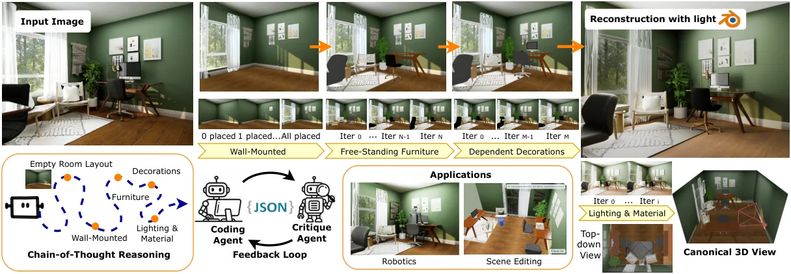
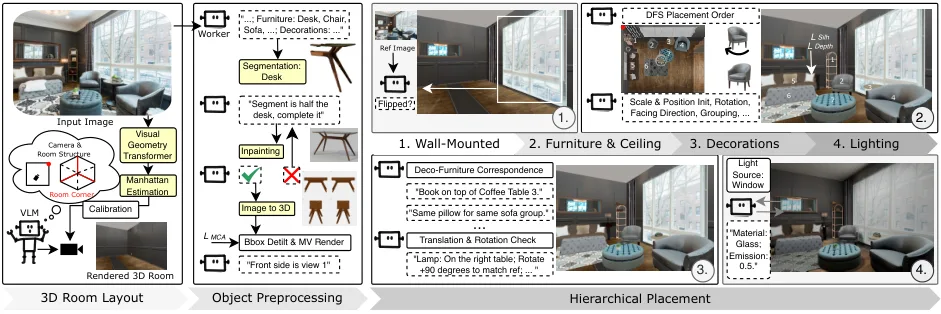
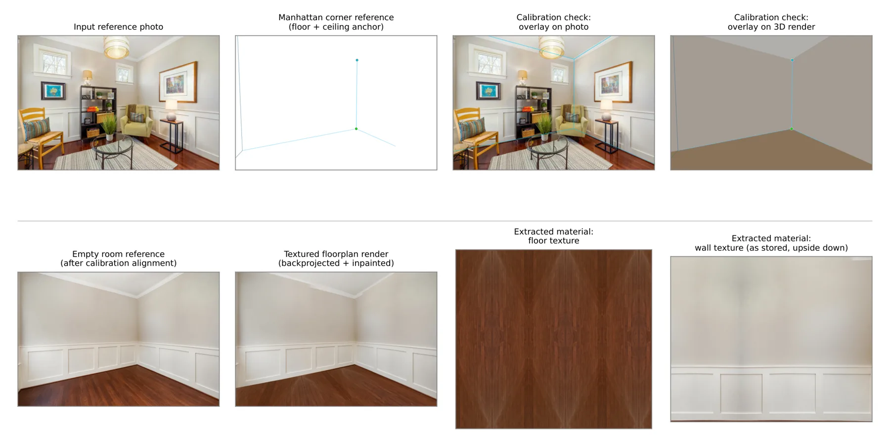
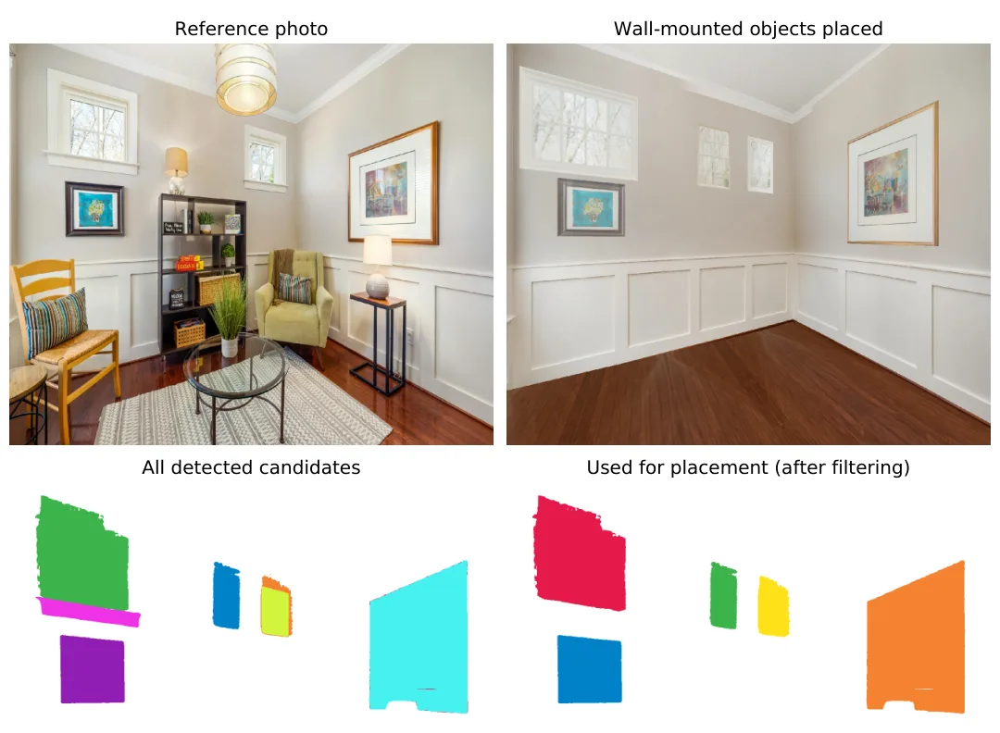
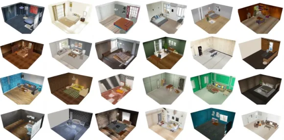
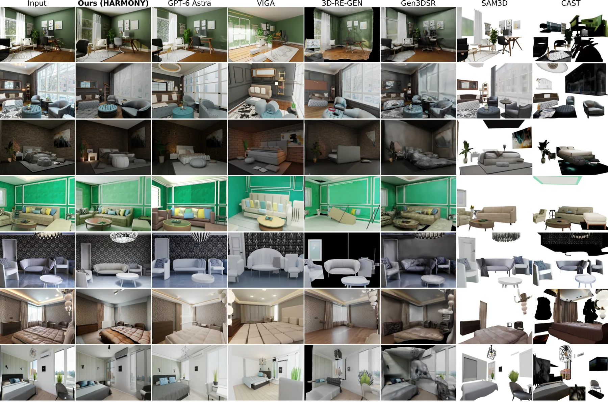

HARMONY：面向单目图像到场景合成的层次化智能体推理
HARMONY: Hierarchical Agentic Reasoning for MONocular Image-to-Scene Synthesis
让 VLM 负责“谁靠着谁、谁在谁上面、谁朝向谁”的关系推理与分阶段摆放，让视觉几何基础模型（VGGT 点云 + 轮廓）负责把摆放细化到米制位置与尺度，每阶段渲染回看纠错，全程不训练任何模型。
Negative-CLIP
Top-1 rate
F-score at 0.1
作者、单位与技术谱系 · Research context
作者与单位
研究脉络
- VGGT（Wang et al., 2025）方法基座（几何来源）关系：提供点云与相机，用于曼哈顿框架、包围平面与相机标定，并作为每物体几何精化的深度来源[arXiv 官方 HTML v1]
- CAST（Yao et al., ACM TOG 2025）上游方法（同任务前作）关系：同为“推理物体间关系 + 逐物体生成”的组合式场景重建，本文在放置推理与几何落地上推进[arXiv 官方 HTML v1]
- VIGA / Vision-as-Inverse-Graphics Agent（Yin et al., 2026）上游方法（同期竞品）关系：同样用“渲染并与输入比较后迭代”的思路，但缺少逐物体的直接几何监督[arXiv 官方 HTML v1]
- SceneSmith（Pfaff et al., 2026）上游方法（层次化摆放顺序来源）关系：提出了从壁挂到家具的层次化摆放顺序，但只在语言条件与资产检索下工作[arXiv 官方 HTML v1]
合作网络
- 论文署名与单位HARMONY 论文署名作者 → 宾夕法尼亚大学（University of Pennsylvania）关系：署名单位[arXiv 官方 HTML v1]
- 项目页HARMONY 论文作者 → cwchenwang.github.io/harmony关系：官方项目页（论文自述入口）[arXiv 官方 HTML v1]
- 模型依赖链HARMONY 流水线的各阶段 → gpt-5.5（VLM）、Gemini-Flash-2.5（图像编辑）、Hunyuan3D-2（图生 3D）、VGGT、LocateAnything、SAM2、Blender Cycles关系：明确技术依赖[arXiv 官方 HTML v1]
- 资助关系Apple Inc. → HARMONY 研究关系：资助关系（论文自述）[arXiv 官方 HTML v1]
署名、单位、项目页、资助与模型依赖均来自论文作者块、附录与致谢；技术接续来自相关工作与方法章节。除上述署名与依赖事实外，未发现公开证据支持的合作项目或师生关系，不作推断。名称相近的 nstar1125/HARMONI_RELEASE（首尔大学与 NAVER Cloud）与本篇无关，已在局限段落中区分。
方法本质拆解 · What actually changed
是不是微调？
不是微调，也不是训练：附录明确写“HARMONY composes off-the-shelf foundation models; no component is trained or fine-tuned”，视觉语言推理用一个 VLM、修复与外观合成用一个图像编辑模型、几何到网格用图生 3D 模型，全部按现成权重或 API 调用，没有任何权重会被本研究改动。
有没有额外约束？
约束分两类。几何侧：房间必须是曼哈顿结构（法线聚类出三个正交轴、六个包围平面），尺度只由“已知房间高度”这一条外部米制参考确定，物体位置被参数化为位置、统一尺度与偏航，碰撞时只施加最小破坏性位移。流程侧：摆放必须按壁挂→家具→装饰的层次顺序，家具必须深度优先遍历，每阶段结束必须通过渲染回看的一致性检查，装饰必须绑定到具体宿主家具。
推理/后端到底做了什么？
推理是一条带人工可核查中间产物的六阶段链：VLM 推断房间尺寸与锚点 → VGGT 点云拟合曼哈顿框架与包围平面 → 闭式求解相似变换与相机位姿 → 检测/分割/修复/网格重建 → VLM 按层次摆放 → 轮廓与点云两级几何精化 → 每阶段渲染回看纠错 → 用 Blender Cycles 做重光照。没有测试期网络优化，但每一步都会读写磁盘上的中间产物（可以中断续跑），且每个物体平均要发起若干次 VLM 调用，因此推理成本主要在外部模型延迟而不是数值优化。
方法本质是什么？
本质是把“空间关系”与“米制位置”分配给两个不同的决策者：语义关系由 VLM 在层次化思维链里决定（谁靠墙、谁在谁上面、谁朝向谁），数值位置与尺度由视觉几何信号决定（轮廓定横向与尺度/深度比、点云定前向距离），再用每阶段渲染回看把两者的错误在局部消掉而不是任其向下传播。它没有做的是：不训练任何模型、不做全局联合优化、不做时序、也不保证脱离曼哈顿假设与已知房间高度仍可定尺度。
输入=单张室内图像 + 房间高度等少量先验；改变的位置=物体的语义层级顺序与米制位置/尺度（房间尺度由锚点边与已知高度闭式定死）；动作=曼哈顿框架拟合与相似变换闭式求解 + VLM 层次化摆放 + 轮廓/点云两级几何精化 + 每阶段渲染回看纠错；直接效果=Front3D 上 N-CLIP 0.092、PL 0.041、F@0.1 89.82 全表最好，用户研究 67.0% 首选。

动机与问题Motivation
动机与问题
论文把单图场景重建的困难拆成两类：一是几何上病态，单视图只捕获部分几何且物体间遮挡严重；二是布局上缺乏显式线索，2D 图像并不直接给出物体的精确尺度与空间关系。既有路线各有短板：只靠低层感知（估计深度与点云再拼装）的方法不显式推理物体间关系，在遮挡与小物体上会出物体位姿与相对摆放错误；纯语言条件的 VLM 布局方法能推理“靠墙”“在……之上”等关系，但只在语言里工作、靠资产检索落地，因此只能处理简单物体与模板化排布；带图像条件的 VLM 方法恢复了落地性并取得较强高层语义对齐，却继承 VLM 无法做精确视觉—几何推理的弱点，物体位置不准、与输入视觉不匹配。作者还引用同期的 VIGA 作为反例：它用 Blender 智能体渲染并和输入比较后迭代调整，但仍只能产生“语义上相似”的场景，因为 VLM 本身无法推理精确数值。
方法Method
方法总览
HARMONY 是一条六阶段流水线（附录 A 概述）：平面图与相机恢复、壁挂物放置、家具放置、天花板物体放置、装饰放置、光照估计。相机与房间几何阶段先用 VLM 从图像语义推断房间类型与大致尺寸作为尺度先验，并标出最深的可见房间角点作为锚点，同时给每个可见墙面打标签；再用 VGGT 预测的点云与相机，通过对表面法线做迭代 SVD 聚类得到曼哈顿框架，用逐轴直方图拟合与法线对齐定位房间六个包围平面，在这套坐标系里找出最深的楼面角点及其正上方天花板角点，最后闭式求解一个相似变换（旋转、均匀尺度、平移）把 VGGT 位姿表达进规范房间系——尺度唯一的外部米制参考是已知房间高度，锚点边把尺度定死。物体处理阶段按层级逐层检测与分割（先壁挂、再独立家具与天花板物体、最后依附装饰），对遮挡物体先用 VLM 生成条件化描述再交给图像编辑模型做修复，再用图生 3D 模型重建网格、用 PCA 去倾并让 VLM 从多视角渲染里标注朝向。摆放阶段 VLM 以锚点角点最深点为参考做深度优先遍历（先放最靠锚点的两侧墙物体、再逐步向房间内部与相机方向推进），逐物体给出位置、统一尺度与偏航，随后几何精化用轮廓固定横向位置与尺度/深度比、用分割后的点云前表面均值固定前向距离从而解出米制尺度；发生碰撞时取“最小破坏性位移”并让 VLM 重排顺序；每个阶段结束后渲染当前场景回传给 VLM 做反思式核对与纠正。
关键技术细节
三个机制值得单独记录。① 相机与尺度的闭式求解：先在曼哈顿框架里按“哪一轴与相机前向点积更大”分配宽/深方向、并按相机朝向修正符号以保证右手系与外积关系，再用锚点边与已知房间高度恢复均匀尺度，最后闭式求出把楼面锚点钉到规范墙角的平移，从而得到从 VGGT 空间到规范房间系的相似变换，相机位姿也随之解出。② 几何落地精化是“轮廓 + 点云”两级耦合：轮廓给出水平中心与宽度，横向偏移可反投影为侧向平移，同时从视张角读出物体角尺寸，但轮廓本身在“物体尺度”与“深度”之间歧义，因此它只用来修正 VLM 的粗略尺寸先验与尺度/深度比；点云侧则用逐物体掩码分割点云与渲染场景，按迭代中位数加 MAD 离群剔除取稳健前表面均值，用其沿视线方向的位移矫正深度，最后把角尺寸与矫正后的深度相乘得到米制尺度。③ 反思式反馈环与一致性检查：每阶段渲染后由 VLM 检查尺度、朝向、漏放与错配，装饰部分还要判断它依附于哪件家具，若发现同类别家具混淆（例如两个相似的边桌）则触发边界框重叠度检查重新指派宿主。防误差累积的设计不止于此：检测与分割后会过滤重复与虚假检测，装饰放置结束后 VLM 还会对照输入统计物体数量并补齐缺失实例（复用同类网格或重新生成）。

实验Experiments
实验设置
数据集三个：Front3D 渲染图 100 幅（带 3D 真值，用于几何量化）、HARMONY30（30 幅真实、无版权约束的野外室内图像，覆盖不同布局、风格与光照）、以及为验证鲁棒性构建的 HARMONY300（300 个单图像室内场景，含前 30 幅评测场景）。指标分两类：感知/渲染质量沿用 VIGA 的做法，从输入视角渲染后与参考图比较，用 Negative-CLIP（N-CLIP，越小越好）、归一化 RGB 上的像素级 MSE（PL）与 LPIPS；有真值网格的 Front3D 另报倒角距离与 0.1/0.01/0.001 三档 F-score。另有 16 名参与者、20 个场景、5 个基线的用户研究，报告平均排名与标准差以及排名第一/前两名的比例。对照是五个单图到 3D 场景的代表方法：Gen3DSR、3D-ReGen、CAST、SAM3D 与同期 VIGA，均尽量使用官方发布的检查点；SAM3D 需要逐物体掩码，因此用 HARMONY 自己的分割掩码（记为 SAM3D*），CAST 无官方发布故使用可得的非官方实现，且 CAST 与 SAM3D 不重建背景，评测时用本文方法的背景补齐。硬件为 NVIDIA L40（每卡 46 GB），场景级运行时间随物体数与 VLM 延迟变化，平均每个被放置物体要若干次 VLM 调用。
实验数字与比较
① Front3D（表 1，N-CLIP / PL / CD / F@0.1 / F@0.01 / F@0.001，N-CLIP 与 PL 越低越好）：HARMONY 0.092 / 0.041 / 0.049 / 89.82 / 19.47 / 0.130；GPT-6 Astra 0.095 / 0.052 / 0.061 / 77.44 / 14.04 / 0.090；SAM3D* 0.127 / 0.069 / 0.056 / 81.79 / 14.44 / 0.089；CAST 0.149 / 0.077 / 0.052 / 85.70 / 14.39 / 0.093；3D-ReGen 0.163 / 0.142 / 0.060 / 78.87 / 12.65 / 0.088；Gen3DSR 0.168 / 0.043 / 0.057 / 78.33 / 10.01 / 0.050；VIGA 0.179 / 0.079 / 0.055 / 83.90 / 12.67 / 0.074。论文据此强调 N-CLIP 最好（语义最忠实）、PL 与几何指标也最好，并指出 GPT-6 Astra 虽然视觉上合理但几何误差更大（例如床没有贴墙）。② 真实图像与用户研究（表 2，N-CLIP / PL / 平均排名 / Top-1 / Top-2）：HARMONY 0.112 / 0.045 / 1.54±0.93 / 67.0% / 86.0%；SAM3D* 0.194 / 0.051 / 3.26 / 13.7% / 39.3%；Gen3DSR 0.213 / 0.049 / 3.34 / 11.3% / 37.3%；CAST 0.172 / 0.099 / 4.15 / 3.3% / 14.7%；3D-ReGen 0.154 / 0.053 / 4.34 / 4.0% / 13.7%；VIGA 0.184 / 0.069 / 4.37 / 0.7% / 9.0%；GPT-6 Astra 0.127 / 0.047（未参与用户研究）。③ 论文还报告：用同一框架在 HARMONY300 上跑完整流程以证明鲁棒性，并在附录给出 3D-Front 结果、多种房型、规范视角、多房间布局与物理仿真/机器人交互应用；这些附录结果的具体数值未在正文列出，本页以正文与主表为准。
消融/失败边界
消融（表 3，Front3D，N-CLIP / PL，越低越好）逐项替换后可以清楚看出每条设计的作用：完整方法 0.1034 / 0.0462；去掉相机标定最差，退化到 0.1381 / 0.0596（并直接使感知指标崩坏）；去掉轮廓精化与放置精化为 0.1051 / 0.0516；去掉反思式反馈环为 0.1184 / 0.0509（N-CLIP 明显变差，说明纠错环主要保护语义保真度）；去掉 VGGT 几何精化为 0.1069 / 0.0509；去掉 VLM 放置推理为 0.1079 / 0.0522；去掉规范化的检测为 0.1079 附近的同一量级；去掉深度优先遍历为 0.1045 / 0.0523、去掉摆放顺序为 0.1065 / 0.0477——作者据此强调“即使每个物体的估计都正确，无序摆放也会带来遮挡与依附错误”。失败模式（图 4）分两类：罕见类别同义词不匹配会让检测失败（例如健身房里的少见器械），论文给出“低落地置信度检测占比”与“真实摆放失败占比”两个比例，但这两个具体数值在官方 HTML 中被公式渲染吞掉，待核验；另一类是前景裁切造成严重遮挡——物体贴近相机且大部分被裁掉时，VLM 仍能给出正确的语义关系（例如靠哪面墙），但从渲染视角看重建网格约束不足。
局限与迁移Limitations & Transfer
局限与待核验
作者明确承认的边界是间接的：结论一节把“扩展到多视图图像”和“推断物体关节结构”列为未来工作，等于承认当前方法限于单视图、且重建出的静态网格不含可动关节；失败案例一节承认罕见类别会因 VLM 与检测器词表不一致而漏检、贴相机被裁切的物体约束不足；此外论文把修复失败的两个手段写成“在同一框架内换更强的基础模型”，也意味着系统能力上限被外部模型锁定。我们的待核验项有五条：① 全流程不训练任何组件（附录 B.1 明确列出 gpt-5.5、Gemini-Flash-2.5、Hunyuan3D-2、VGGT、LocateAnything、SAM2 与 Blender Cycles 各自角色），因此结果会随这些模型的版本变化而漂移，复现需要固定具体版本，而论文未给版本号细节；② 表 1、表 2 中 GPT-6 Astra 与 gpt-5.5 属于闭源服务的输出，无法独立核验其内部配置；③ 多处关键数值（每场景运行分钟数、每物体 VLM 调用次数、相机标定中若干阈值与百分位、图生 3D 的八叉树分辨率/扩散步数/目标面数）在官方 HTML 中被公式渲染吞掉，需回到 PDF/TeX 才能复现；④ 用户研究只有 16 名参与者、20 个场景，且未说明参与者背景与顺序效应控制；⑤ 论文未报告在真实采集设备上闭环运行（例如机器人在场）的结果，其“机器人交互/物理仿真”只是附录应用示例。另需注意与本仓库 9-28 记录的 nstar1125/HARMONI_RELEASE 并非同一工作（后者是首尔大学与 NAVER Cloud 的多视图 4D 人—场景重建），名称相近但任务、单位与数据集均不同。
与你研究路线的关系
可迁移模块有四处。① “用一个已知的米制量（房间高度）加一个几何锚点边（最深角点的垂直线段）闭式求解相似变换来定单目尺度”是一条实用技巧，可直接对照我们在单目/单源几何初始化里如何用已知标定尺、控制点或先验基线定尺度。② 布局的层次化与深度优先遍历给出的原则是“每一次新决策都条件化于已经确定的结构，并且让新对象在无遮挡视角下被评估”，这与我们做增量建图/增量标定时的顺序设计同源，值得在我们多阶段外参或地图精化流程里做一次“有序 vs 无序”的对照。③ “轮廓定横向与尺度/深度比、点云定前向距离、两者耦合解出米制尺度”是图像空间与深度空间联合定标的范例，与我们外参与尺度联合估计的思路一致，可作为方法参考。④ 反思式反馈环（每阶段渲染回看、发现漏放/错配/尺度异常再纠正）是防误差累积的通用流程设计，可移植到我们的多阶段处理管线中作为质量门。一步实验：在我们已有的场景/地图产物上，实现一个最小版“语义先验 + 几何精化”的两级摆放或对齐流程，比较“只语义”“只几何”“语义+几何+回看纠错”三种配置的一致性与位置误差。明确的停留点：HARMONY 不做时序、不做位姿估计与平差（相机位姿是它的输入条件之一），也不追求实时，它的可迁移性集中在“语义与几何的分工方式”和“可核查的定尺度技巧”。







